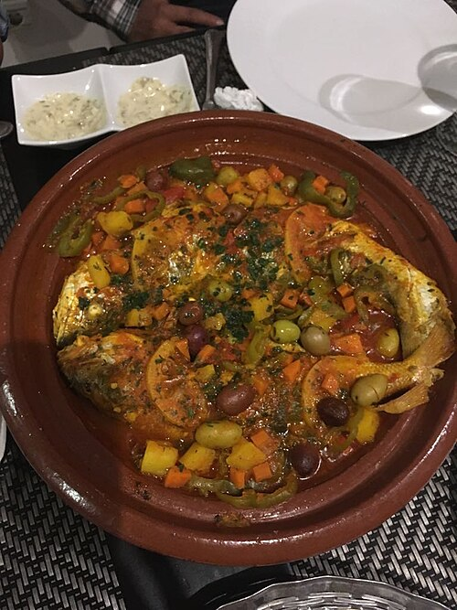
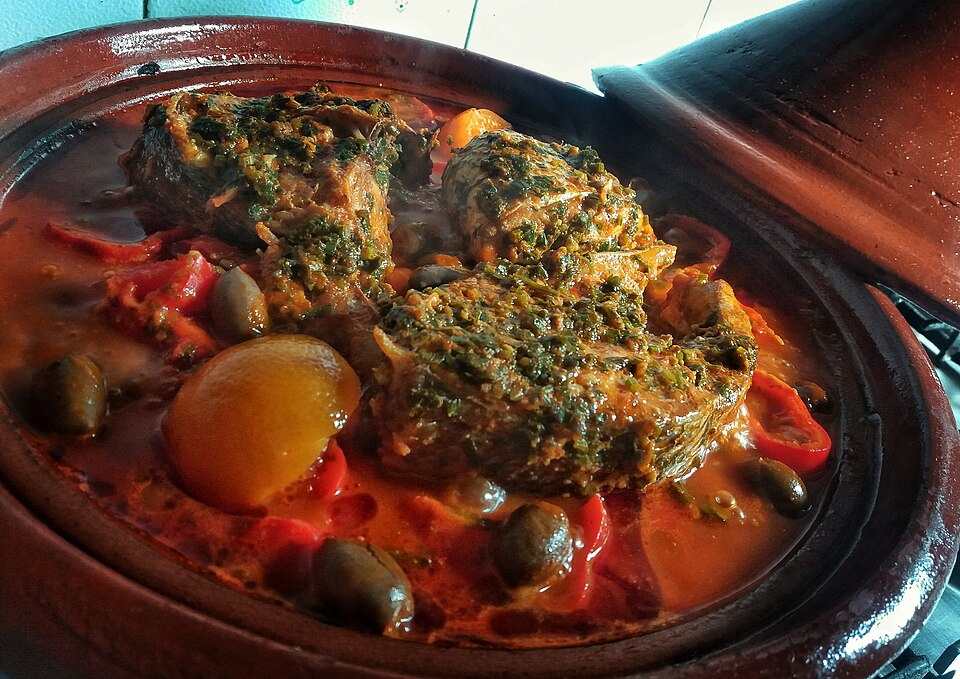
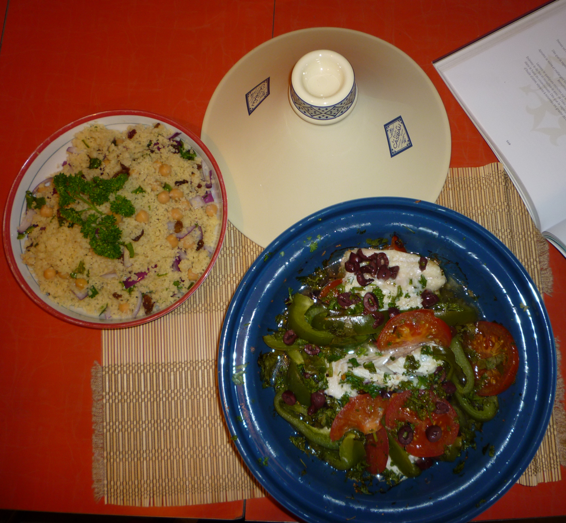
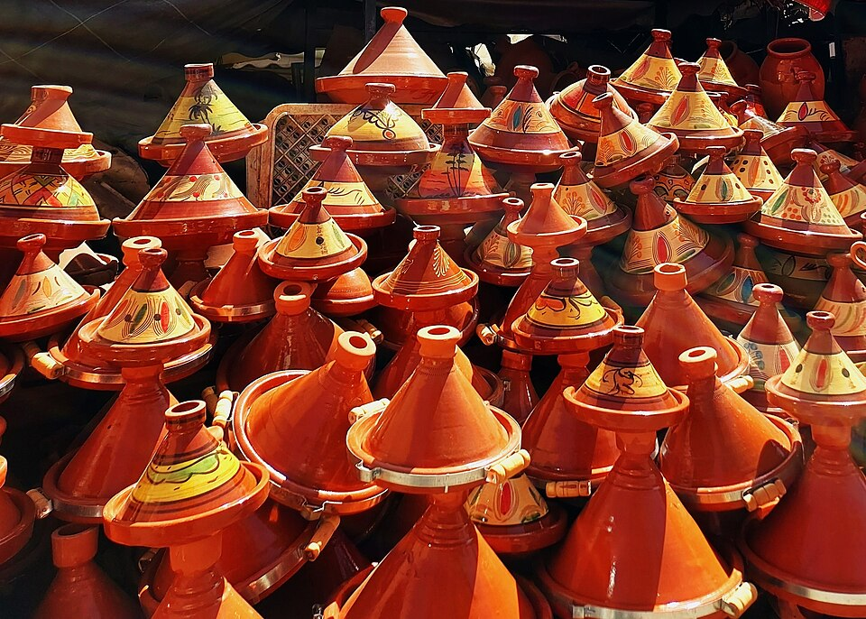

Tajín de peix

El tajín de peix és una preparació present a la cuina del Marroc, especialment interessant en les zones costaneres. Combina peix amb verdures, herbes aromàtiques i espècies que aporten sabor al plat.
Es pot preparar amb ingredients com patata, ceba, tomàquet, pebrot i llimona. La combinació concreta varia segons la recepta i els ingredients disponibles, de manera que es poden trobar diferents versions d'aquest plat.
El nom tajín també fa referència al recipient tradicional de fang, format per una base ampla i una tapa cònica. Aquest recipient permet cuinar els ingredients lentament i conservar-ne la humitat.
Ingredients orientatius
- Patata
- Pebrot
- Ceba
- Tomàquet
- Pastanaga
- Peix fresc (com llobarro o dorada)
- Espècies (com comí, pebre vermell, curri)
- Oli d'oliva verge extra
- Llimona
- Sal al gust
Preparació
- Renta les verdures i talla-les a tires.
- Sofregir les verdures amb oli d'oliva i les espècies i aigua per fer el caldo.
- Afegeix-hi el peix i cuina a foc lent.
- Al final, afegeix-hi una mica de llimona i sal al gust.
Galeria del tajín



Vídeo de preparació
Vídeo de preparació del tajín. (en castellà) Veure el vídeo a YouTube .